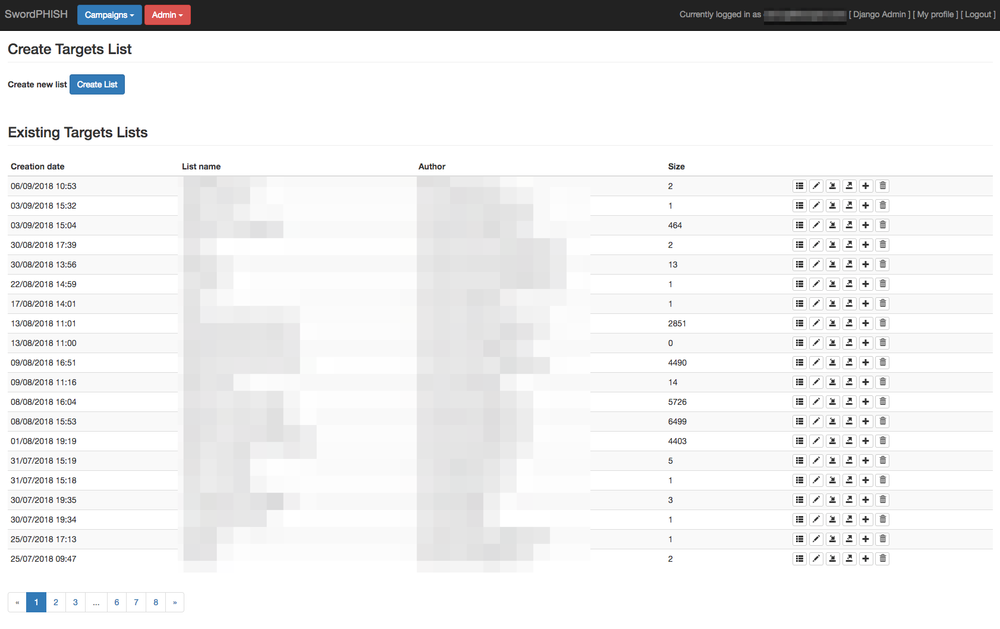
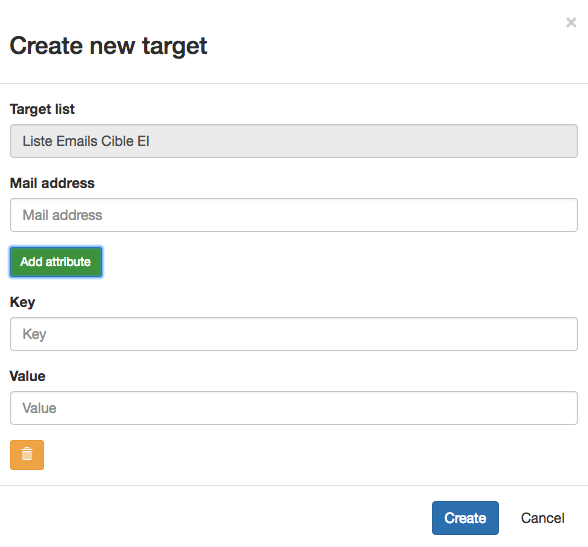
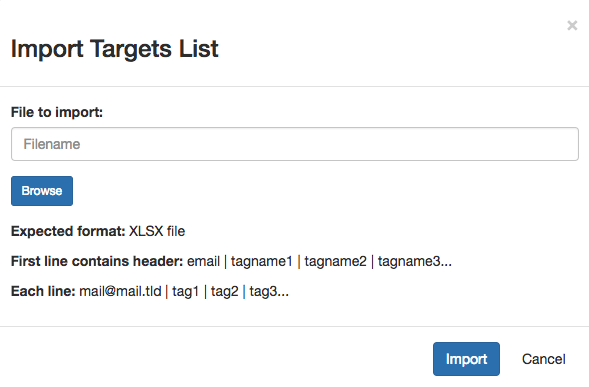

Targets
Targets are the people you want to send fake phishing to. They're organised in targets lists.

After having created a target list, there is two-way to create targets in it:
- manually: adding every target, keys and values manually, which can be a bit painful...

- importing an
xslxfile: you can build your list in Excel or Open Office or whatever xlsx file editor, then import the full list in one time

Tags
To allow you to create accurate statistics when making campaigns, swordphish allows to tag the targets with keys and values.
The goal is to identify populations who need more awareness, or, for example, to check if your last awareness campaign was efficient.
On this case you can tag every target with the key "awareness" and the value "yes" or "no" if they were trained or not.
But you are free to tag the way you want (respect your local law, no sexual or racial tags for example).
The tags will be available in the campaigns results to permit to do statistics based on them and prioritize your next awareness campaigns.
xlsx file
We chose to use XLSX file to import list because we think that Excel is very mainstream on corporate computers and because XLSX files are utf-8 encoded.
The format expected is simple. The first line must be formatted like this:
email | key1 | key2 | key3 ... (keys are optional)
Then every line must be filled liked this:
mail@mail.com | val1 | val2 | val3 ... (valus are optional)
An export function is also available to edit easily an existing list or to keep it for another campaign.